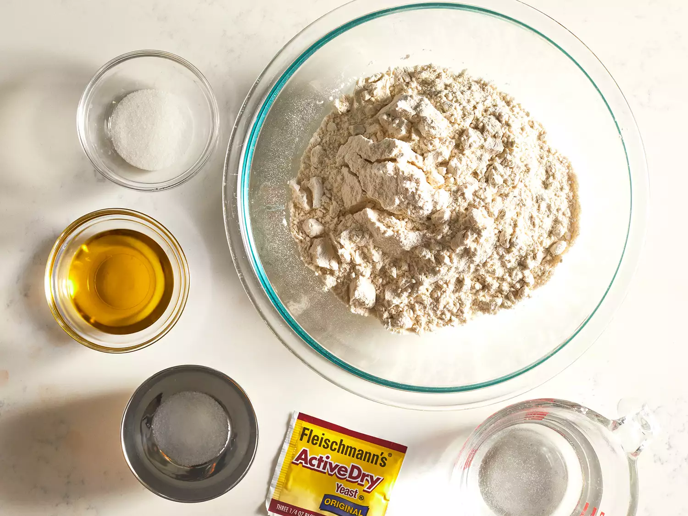
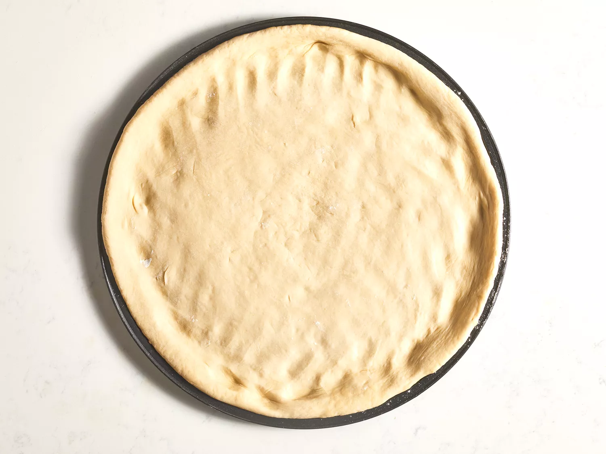

Easy Homemade Pizza Dough
This is a great recipe when you don't want to wait for the dough to rise. You just mix it and allow it to rest for 5 minutes and then it's ready to go! It yields a soft, chewy crust.
- Prep Time: 10 mins
- Cook Time: 15 mins
- Additional Time: 20 mins
- Total Time: 45 mins
- Servings: 8
- Yield: 1 12-inch pizza crust
If you're looking for a homemade pizza crust recipe that's great for beginners, you're in luck. This top-rated recipe is super easy to throw together on a whim - and it puts the store-bought stuff to shame. Learn how to make the best pizza crust of your life with just a few ingredients, find out how to shape the dough, and get our best storage secrets.
Pizza Crust Ingredients
You need just five ingredients (plus some warm water) to make this super simple pizza crust.
Yeast
Active dry yeast is a leavening agent, which means it's the ingredient that causes the pizza dough to rise.
Sugar
To activate your yeast, you'll need to dissolve it in warm water with a teaspoon of sugar. The sugar gives the yeast something to eat and speeds up the activation process. You'll know your yeast is active when it becomes bubbly and frothy on top.
Bread Flour
Bread flour is ideal for pizza crust becauseit creates chewier results than all-purpose flour. This is because it contains more protein, which helps produce lots of gluten. Gluten is what gives the crust elasticity.
Olive Oil
Olive oil serves a couple purposes when it comes to pizza crust: Not only does it add color and flavor, but it creates a barrier between the oil and water. This oily barrier prevents sogginess.
Salt
A little bit of salt goes a long way. Salt adds flavor, strengthens the gluten (creating a chewier crust), and slows down fermentation (resulting in a better rise).
How to Roll Out Pizza Dough
Stretching pizza dough is the most hands-on part of the pizza crust-making process. It takes a little practice, but it's as easy as pie (pun intended). To shape the dough:
Let the Dough Come to Room Temperature
After you're finished mixing the ingredients, allow your dough to rest on the counter for about 30 minutes. This will allow the gluten to relax, making the dough much easier to stretch and shape. Cold dough is much more difficult to work with.
Prepare Your Surface With Oil
You might feel inclined to prep your workspace with a big handful of flour to prevent sticking. This is a helpful step with many kinds of dough. However, in this case, too much flour can make your pizza crust tough. Instead, rub your surface (and your hands) with a few tablespoons of olive oil and maybe a little bit of flour. This will prevent sticking, encourage a crispy texture, and ensure a gorgeous golden color
Shape the Dough
You have a few options when it comes to shaping the dough. Stretch it in the air, use a rolling pin, or pat it with your hands. No matter which method you choose, make sure not to overwork the dough. Working it too much will create a tough texture. When you're done, you should have an even circle that's about 10 to 12 inches wide and about ⅓-inch thick. If you get too thin, the crust may not be able to support the sauce and toppings.

How Long Does Pizza Dough Last In the Fridge?
This pizza dough will last for about five days in the fridge. Store it in an airtight storage container or a bowl tightly covered with storage wrap. Allow the refrigerated dough to sit for about 30 minutes at room temperature before using.
Can You Freeze Pizza Dough?
Yes! You can absolutely freeze pizza dough. This is a great option for people who make pizza often. Prepare the dough for freezing by rolling it into a ball and lightly coating it with oil. Place the ball in a freezer-safe container labeled with the date. Freeze for about three months.
To thaw the dough, simply transfer it to the fridge the night before you plan to use it.
Allrecipes Comunity Tups and Praise
"This crust 'makes' my pizza," says Kandi Brooks. "I sprinkle a bit of Parmesan cheese and Italian seasoning on the top before adding the pizza sauce. It's quick and simple and delicious!"
"Super quick and very easy," according to Lin Snow. "The first pizza crust I've ever made and I was surprised at how well it turned out! We didn't have a pizza pan, so we used a baking sheet. The dough was nice and chewy with a crisp crust."
"This crust is fast, easy, and good! It made my first try at pizza making a breeze," raves Leslie A. "My fiancé was so surprised, as was I! We decided to make our own pizza from now on. I can't believe it's SO easy!"
Editorial contributions by Corey Williams
Ingredients
- 1 cup warm water (110 degrees F/ 45 degrees C)
- 1 (.25 ounce) package actuve dry yeast
- 1 teaspoon white sugar
- 2 1/2 cups bread flour
- 2 tablespoons olive oil
- 1 teaspoon salt
Directions
Step 1
Gather all ingredients. Preheat oven to 450 degrees F (230 degrees C), and lightly grease a pizza pan.

Step 2
Place warm water in a bowl; add yeast and sugar. Mix and let stand until creamy, about 10 minutes.

Step 3
Add flour, oil, and salt to the yeast mixture; beat until smooth. You can do this by hand or use a stand mixer fitted with a dough hook to make it easier.

Step 4
Let rest for 5 minutes.

Step 5
Turn dough out onto a lightly floured surface and pat or roll into a 12-inch circle.

Step 6
Transfer to the prepared pizza pan.

Step 7
Spread crust with sauce and toppings of your choice.

Step 8
Bake in the preheated oven until golden brown, 15 to 20 minutes. Remove from the oven and let cool for 5 minutes before serving.